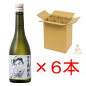

６本入り 無地ダンボール 豪雨災害 復旧の酒 獺祭 島耕作 720ml 磨き 50 日本酒 だっさい 純米大吟醸 山口県 旭酒造 北海道送料安い お中元 ギフト 敬老の日
【重要】今ご注文いただきますと商品は8/16頃の納品分からの出荷となります。8/7日現在 先日の豪雨災害時にタンク内で発酵中だった酒の瓶詰がはじまりました。 豪雨災害で被害を受けた地域のお役にたてる様、ポジティブな形で世に送り出したいと考え、商品が発売されました。 これらの酒は十分に美味しい。コストパフォーマンスが高い商品となっております。 アルコール度数：16度 精米歩合：50％ 日本酒度：非公開 ◎ご自宅用かご贈答用かお知らせください。熨斗は祝大漁、祈大漁なども承り致します。 ◎お選びいただく梱包状態のご説明をよくご覧ください。 ◎猛暑時期の為、関東より西はクール冷蔵便を推奨いたします。全国中1〜3日でお届けが可能です。 お買い上げ本数によりクール便送料は変わります。 ・クール便 道内：+600円 道外：+700円 常温便も承っております。 ◎ご注意8/10以降、順次発送させていただきます。日付指定にはご注意ください。